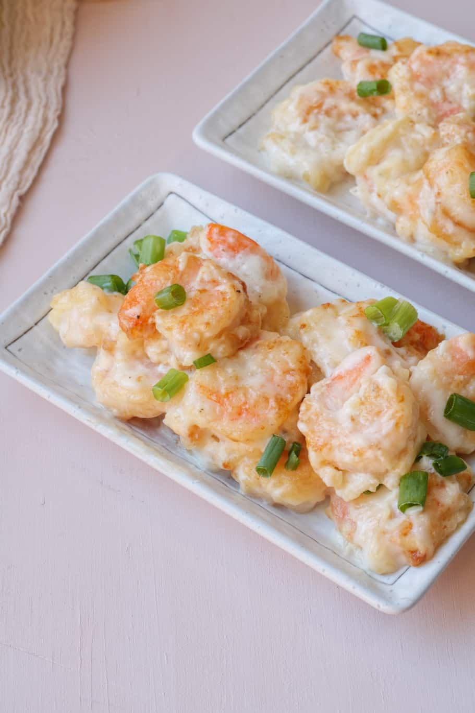

Easy Buffet Style Creamy Chinese Coconut Shrimp Recipe

You'll love this savory but simple Chinese recipe!
This Creamy Chinese Coconut Shrimp Recipe is a quick and easy 30-minute dinner! The silky, smooth, creamy sauce goes amazing with the shrimp and prawns.
To soak up the sauce, serve the dish over rice, quinoa, or creamy mashed potatoes.
Ingredients
- 1 pound shrimp(medium to large shrimp)
- 1/2 teaspoon salt
- 1/4 teaspoon black pepper
- 1 green onion(Garnish)
- 1 cup oil(Frying)
Tempure batter mix:
- 130 mk chilled soda water or sprinkling water
- 1 egg
- 6 tablespoons all-purpose flour or cake flour
- 3 tables corn starch
Coconut Sauce:
- 1 cup coconut milk
- 2 tablespoons coconut cream
- 2 tablespoons mayonnaise
- 2 tablespoons sweetened condensed milk
- 2 tablespoons corn starch
- 1/2 teaspoon salt
Steps
Tempura batter and Frying shrimps
- Whisk together egg and chilled soda water. Pour it over flour and corn starch. Keep mixing until all combined. Skip this step if using a store-bought tempura batter.
- Add shrimp to a large bowl, and sprinkle with salt and black pepper. Pour tempura batter on the shrimp; make sure every shrimp is coated with the batter.
- Add oil to a large skillet on medium to high heat. Fry battered shrimp on each side for 3-4 minutes until crispy.
- Place fried shrimp on a paper towel to drain excess oil.
Coconut Sauce
- In a saucepan, combine coconut milk, coconut cream, sweetened condensed milk, mayonnaise, corn starch, and salt. Mix until all combined.
- Cook the coconut sauce on medium heat while constantly whisking until smooth and thick.
Assembly
- Place fried shrimp in a large bowl, pour coconut sauce on top, and mix until shrimp are coated with the sauce.
- Garnish with green onions, and enjoy!